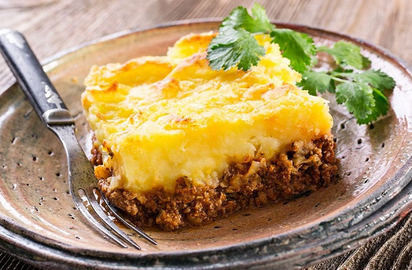

Recetas de cocina

Ingedientes
6 raciones
- 2 kg de papa
- a gusto sal gruesa
- 20 gr. manteca
- leche o crema de leche cant. necesaria
Relleno:
- 1 kg carne picada (sin grasa)
- 2 cebollas
- 1 morrón rojo pequeño
- 2 cubitos de caldo de carne
- 1 cda. pimentón dulce
- 1 cdita. ají molido
- 1 cda. gorda de mostaza
- 1 cda. condimento para carne
- 1 cda. perejil fresco picado
- 70 gr. aceitunas descarozadas
- 2 huevos duros